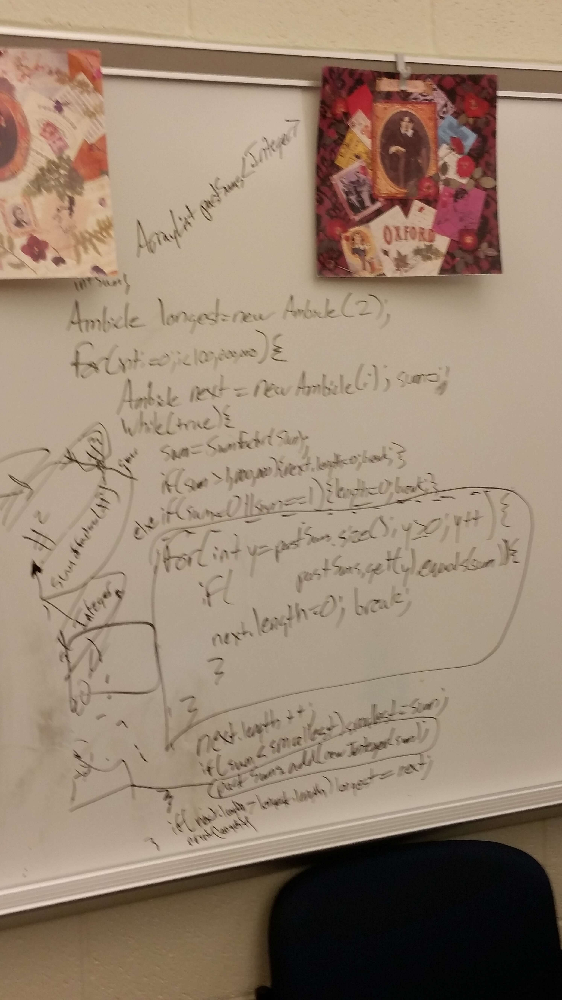

I use Project Euler as a challege for me and the people I help teach computer science. It gives them a challenge that must use computer science to solve and gives them in sight on higher level math. We try to solve it first with math before we give up hope and brute force and bodge the code to work. From their website, "The intended audience include students for whom the basic curriculum is not feeding their hunger to learn, adults whose background was not primarily mathematics but had an interest in things mathematical, and professionals who want to keep their problem solving and mathematics on the cutting edge." I will soon be putting a repo on github of the code used to sovle problems. I will list some of the problem below to show you what the problems look like.
If we list all the natural numbers below 10 that are multiples of 3 or 5, we get 3, 5, 6 and 9. The sum of these multiples is 23. Find the sum of all the multiples of 3 or 5 below 1000.
This one is super easy and I just put it as a warm up to the
The proper divisors of a number are all the divisors excluding the number itself. For example, the proper divisors of 28 are 1, 2, 4, 7, and 14. As the sum of these divisors is equal to 28, we call it a perfect number. Interestingly the sum of the proper divisors of 220 is 284 and the sum of the proper divisors of 284 is 220, forming a chain of two numbers. For this reason, 220 and 284 are called an amicable pair. Perhaps less well known are longer chains. For example, starting with 12496, we form a chain of five numbers: 12496 → 14288 → 15472 → 14536 → 14264 (→ 12496 → ...) Since this chain returns to its starting point, it is called an amicable chain. Find the smallest member of the longest amicable chain with no element exceeding one million.
This one I use as a challenge for anyone wanting to prove themselves. I will time people how long it takes them to complete this, but I allow them to work in groups. It is important that they understand the problem, can solve the math, communicate how they want to solve it, work on project structure, and work together on bugs.
Let's call an integer sided triangle with exactly one angle of 60 degrees a 60-degree triangle. Let r be the radius of the inscribed circle of such a 60-degree triangle. There are 1234 60-degree triangles for which r ≤ 100. Let T(n) be the number of 60-degree triangles for which r ≤ n, so T(100) = 1234, T(1000) = 22767, and T(10000) = 359912. Find T(1053779).
This one was a fun one to complete on my own. Took a long time.
Adam plays the following game with his birthday cake.
He cuts a piece forming a circular sector of 60 degrees and flips the piece upside down, with the icing on the bottom.
He then rotates the cake by 60 degrees counterclockwise, cuts an adjacent 60 degree piece and flips it upside down.
He keeps repeating this, until after a total of twelve steps, all the icing is back on top.
Amazingly, this works for any piece size, even if the cutting angle is an irrational number: all the icing will be back on top after a finite number of steps.
Now, Adam tries something different: he alternates cutting pieces of size x=3609x=3609 degrees, y=36010y=36010 degrees and z=36011√z=36011 degrees. The first piece he cuts has size x and he flips it. The second has size y and he flips it. The third has size z and he flips it. He repeats this with pieces of size x, y and z in that order until all the icing is back on top, and discovers he needs 60 flips altogether.
p566-cakeicingpuzzle.gif
Let F(a, b, c) be the minimum number of piece flips needed to get all the icing back on top for pieces of size x=360ax=360a degrees, y=360by=360b degrees and z=360c√z=360c degrees.
Let G(n)=∑9≤a
I am currently working on this one with an eager learner. Will post picture and code.